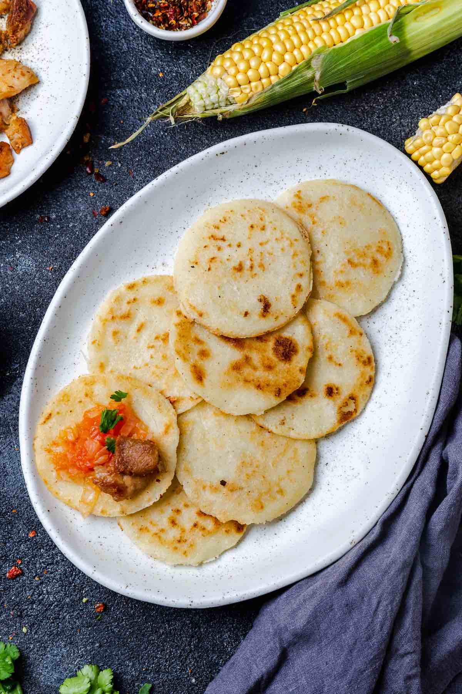

Arepa Paisa

Description
It’s a popular cornmeal flatbread and can be served on its own or topped with eggs, cheese or meat
Ingredients
- Arepa Flour (Cornmeal)
- Warm Water (not boiling)
- Unsalted Butter
- Salt
Steps
- Start by combining flour, warm water, butter, and salt. Mix well and knead it into a soft dough.
- Cut the dough into 8-10 equal portions and shape each into a small ball. Then roll each one out into thin disks.
- Add butter to a non-stick skillet over medium heat. Cook the disks for about 3-5 minutes on each side until the surface turns golden brown.